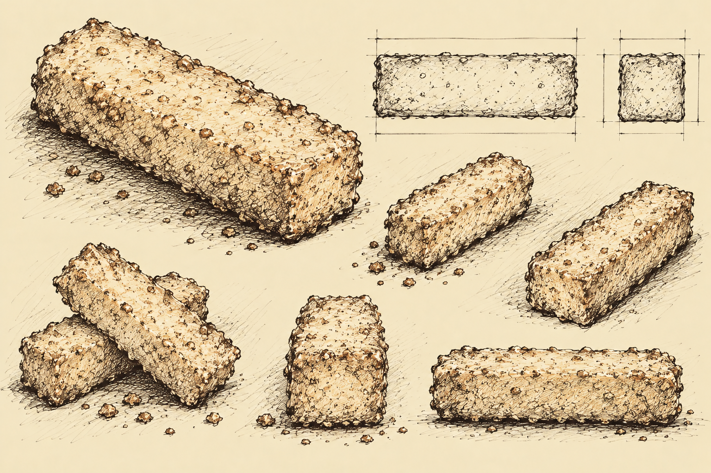

Entry XV
The Offsite Journal of Elias Grimsby
The First Day Following My Disappointment
I have concluded that the latest version of York City was created in memory of the giant apple, rather than to contain a giant apple.
I find this discouraging.
However...
My investigation of Subject H-31 must continue.
Reports suggest that the creature has crossed into a neighboring territory known as New Jersey.
Apparently, the Americans have replaced Jersey as well.
I am beginning to suspect a troubling lack of confidence in their original settlements.
I arranged transportation.
Unfortunately, my directions proved inadequate.
After wandering for some time, I encountered a small establishment bearing the name Quick Stop.
This seemed an appropriate place to inquire about directions.
Inside, I encountered two gentlemen.
One appeared deeply unhappy to be working.
He informed me that he was not even supposed to be there today.
I observed that he was nevertheless present.
He did not appreciate this observation.
The second gentleman appeared considerably less concerned with his employment.
Indeed, I could not determine whether he was employed there at all.
After a brief and largely unproductive conversation, I was directed outside.
There I encountered two additional gentlemen.
One was exceptionally talkative.
The other was not.
I explained that I was searching for an unusual creature of uncertain appearance with a particular fondness for confectionery.
The talkative gentleman became immediately excited.
"Snoogans! Yo, check it out, man! Me and Silent Bob are posted up outside Quick Stop, right? Just minding our own fuckin' business, slingin' nickels, when this little fuckin' weirdo comes waddling up outta nowhere!"
I attempted to interrupt.
He continued.
"Yo, I shit you not, this little motherfucker looked like a fuckin' pumpkin goblin! Had this nasty-ass burlap sack on his head, all crooked and shit, with these two fucked-up button eyes staring right at me!"
He gestured enthusiastically.
"And he's wearing these dirty-ass footie pajamas! No, wait. It was a flannel. Nah, fuck, maybe it was one of those hospital gowns or some shit. Look, I was just happy I didn't have to look at man-ass!"
I was having considerable difficulty following his account.
"And this little sack-headed motherfucker's got a Reese's Cup in his hand! Just standing there, eating his fuckin' peanut butter cup like he owns the place!"
I recognized the reference to confectionery.
This seemed promising.
Unfortunately, he continued before I could inquire further.
"So I'm like, 'Yo, Bob! You seeing this little potato-headed motherfucker?' And Bob's just standing there, being all Silent Bob and shit!"
He paused briefly.
I seized the opportunity to ask where the creature had gone.
"Right over there, motherfucker!"
He pointed across the street.
"Little freak waddled right over to Wild Billy's! Fuckin' place has a bouncy castle! Snoochie boochies!"
I believe the gentleman had witnessed an incident involving a potato, several articles of clothing, and a confection.
There was also some discussion of buttocks.
I could not establish the relationship between these subjects.
His companion had remained silent throughout the exchange.
I found this increasingly admirable.
Then, quite unexpectedly, the silent gentleman spoke.
"I've fought monsters. Demons. Angels. I've seen things that would make most men question everything they believe about the universe."
He looked toward the establishment across the street.
"But I've learned something. Sometimes the strangest things aren't lost. They're exactly where they want to be."
He fell silent once more.
I considered his words.
This gentleman appeared to possess considerable experience with unusual creatures.
Perhaps H-31 was not wandering aimlessly.
Perhaps its movements were deliberate.
I thanked him for his insight.
I briefly considered offering him a position at the Institute.
His companion began speaking again.
I departed.
Across the street stood an establishment bearing the remarkable name:
WILD BILLY'S BREWS & BOUNCY CASTLE
I observed several patrons consuming alcoholic beverages.
There was also an inflatable castle.
I could discern no relationship between the two.
However...
I was not there to investigate architecture.
A sign near the entrance advertised the day's soup.
French onion.
Beneath this was another notice.
FREE CHEESE STICKS IF YOU'RE ONLY THIS HIGH
An accompanying mark indicated a remarkably modest stature.
I found this an unusual qualification for receiving complimentary food.
The Americans do things differently.
I entered and inquired whether anyone had observed a peculiar creature.
The proprietor became visibly uncomfortable.
He informed me that a very small individual had recently entered, requested soup, and received several complimentary cheese sticks.
The individual had apparently departed in considerable haste.
I asked whether the creature had been carrying confectionery.
He confirmed that it had.
H-31!
At last, a promising lead.
I requested to inspect the area where the creature had been seated.
The proprietor reluctantly obliged.
There, beneath a table, I discovered an unusual cylindrical object.
Its exterior was golden and slightly irregular.
It possessed a texture resembling fried bread.
However...
Upon closer examination, I discovered that the object contained a pale, elastic substance surrounding a darker material.
The darker material appeared to contain fragments of onion.
It also possessed a surprisingly familiar aroma.
I could not determine whether the object was mineral, vegetable, or some previously undocumented combination of the two.
I attempted to lift it.
The exterior yielded slightly beneath my fingers.
Most peculiar.
I considered tasting it.
Then I recalled my previous encounters with substances of uncertain origin.
I elected not to.
The object may represent another specimen associated with H-31.
I have carefully secured it for transport to the Institute.

Pending tests.
I remain frustrated by my inability to apprehend Subject H-31.
However, I have acquired another specimen and encountered a gentleman whose experience with monsters may prove valuable.
I have also learned that the inhabitants of New Jersey possess an unusual approach to commerce.
Particularly where cheese and personal height are concerned.
I shall continue my investigation.